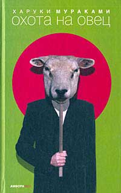
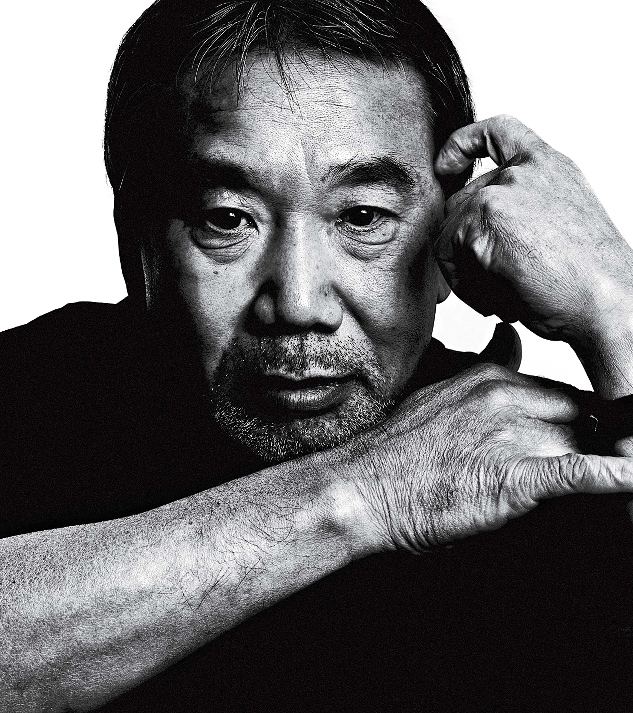

Моя улюблена книга
Бесхлібний Ярослав Миколайович
Назва книги: Охота на Овец
Aвтор: Харукі Муракамі
Жанр: роман, антиутопія, ессе
Рік першого видання: 15 жовтня 1982
Короткий опис
Сюжет заснований на древній китайській легенді про переселення душі вівці в людину. Вівця повністю замінює особистість, в обмін на людину надаються необмежені можливості та сили, спрямовані на встановлення світового панування анархії
Для досягнення цієї цілі вівця використовує тіла різних людей. В романі вона побувала в тілі професора-вівці, потім стала в потомку обезчелого селянина (Сенеса) і перетворила його в всемогучого лідера якоїсь Організації. Використовуючи і вичерпавши його можливості, вівця вдалася в другого головного героя, який, усвідомлюючи готову його долю, закликав на допомогу своїх товаришів, але не дочекавшись, покінчив із собою і, як він сподівався, зі вселеною у нього вівцею.
Моя улюблена книга
Бесхлібний Ярослав Миколайович
(12 січня 1945 -)
Японський письменник і перекладач.
Народився 12 січня 1949 в Кіото, але дитинство провів у портовому місті Кобе. Змалку читав твори англійських письменників, спілкувався з іноземцями і ще в молодості зрозумів, що японська література потребує серйозної модернізації.
У 1980 році Муракамі продав бар, а на життя почав заробляти своїми творами. І не прогадав. У 1981 він завершив «Полювання на овець», отримавши нагороду. З цього роману почався його шлях до мільйонних тиражів і всесвітньої популярності. Про цю книгу автор говорить: «... від оповідання я отримував небувале почуття задоволення. Коли ви читаєте цікаву історію, ви просто продовжуєте читати.
О ее смерти сообщил мне по телефону старый приятель, наткнувшись на случайные строчки в газете. Единственный абзац скупой заметки он членораздельно зачитал прямо в трубку. Заурядная газетная хроника. Молоденький журналист, едва закончив университет, получил задание и опробовал перо.
Тогда-то и там-то такой-то, находясь за рулем грузовика, сбил такую-то.
Вероятность нарушения служебных обязанностей, повлекшего смерть, выясняется...
Как рекламный стишок на задней обложке журнала.
– Где будут похороны? – спросил я.
– Да откуда я знаю? – удивился он. – У нее, вообще, была семья-то?
* * *
Разумеется, семья у нее была.
Я позвонил в полицию, спросил адрес и номер телефона семьи, затем позвонил семье и узнал дату и время похорон. В наше время, как кто-то сказал, если хорошо постараться, можно узнать что угодно.
Семья ее жила в «старом городе», Ситамати. Я развернул карту Токио, отыскал адрес и обвел ее дом тонким красным фломастером. То был действительно очень старый район на самом краю столицы. Ветвистая паутина линий метро, электричек, автобусов давно утратила какую-либо вразумительную четкость и, вплетенная в сети узких улочек и сточных каналов, напоминала морщины на корке дыни. В назначенный день пригородной электричкой от станции Васэда я отправился на похороны. Не доезжая до конечной, я вышел, развернул карту токийских пригородов и обнаружил, что с равным успехом мог бы держать в руках карту мира. Добраться до ее дома стоило мне нескольких пачек сигарет, которые пришлось покупать одну за другой, каждый раз выспрашивая дорогу.
Дом ее оказался стареньким деревянным строением за частоколом из бурых досок. Нагнувшись, я через низенькие ворота пробрался во двор. Тесный садик по левую реку, похоже, был разбит без особой цели, «на всякий случай»; глиняную жаровню, брошенную в дальнем углу, на добрую пядь затопило водой давно прошедших дождей. Земля в саду почернела и блестела от сырости.
Она убежала из дома в шестнадцать; видно, еще и поэтому похороны прошли очень скромно, словно украдкой, в тесном домашнем кругу. Семья состояла сплошь из одних стариков, да то ли родной, то ли сводный брат, мужчина еле за тридцать, заправлял церемонией.
Отец, низкорослый, лет пятидесяти с небольшим, в черном костюме с траурной лентой на груди стоял, подпирая косяк двери, и не подавал ни малейших признаков жизни. Взглянув на него, я вдруг вспомнил, как выглядит дорожный асфальт после только что схлынувшего наводнения.
Уходя, я отвесил молчаливый поклон, и он так же молча поклонился в ответ.
Впервые я встретился с ней осенью 1969 года; мне было двадцать лет, ей – семнадцать. Неподалеку от университета была крохотная кофейня, где собиралась вся наша компания. Заведеньице так себе, но с гарантированным хард-роком – и на редкость паршивым кофе.
Она сидела всегда на одном и том же месте, уперев локти в стол, по уши в своих книгах. В очках, похожих на ортопедический прибор, с костлявыми запястьями – странное чувство близости вызывала она во мне. Ее кофе был вечно остывшим, пепельницы – неизменно полны окурков. Если что и менялось, то только названия книг. Сегодня это мог быть Мики Спиллэйн, завтра – Оэ Кэндзабуро, послезавтра – Аллен Гинзберг... В общем, было бы чтиво, а какое – неважно. Перетекавшая туда-сюда через кофейню студенческая братия то и дело оставляла ей что-нибудь почитать, и она трескала книги, точно жареную кукурузу, – от корки до корки, одну за другой. То были времена, когда люди запросто одалживали книги друг другу, и, думаю, ей ни разу не пришлось кого-то этим стеснить. То были времена «Дорз», «Роллинг Стоунз», «Бердз», «Дип Перпл», «Муди Блюз». Воздух чуть не дрожал от странного напряжения: казалось, не хватало лишь какого-нибудь пинка, чтобы все покатилось в пропасть. Дни прожигались за дешевым виски, не особо удачным сексом, ничего не менявшими спорами и книжками напрокат. Бестолковые, нескладные шестидесятые со скрипом опускали свой занавес.
Я забыл ее имя.
Можно бы, конечно, раскопать лишний раз ту газетную хронику с сообщением о ее смерти. Только как ее звали – мне сейчас совершенно не важно. Я не помню, как оно когда-то звучало. Вот и все.
Давным-давно жила-была Девчонка, Которая Спала С Кем Ни Попадя...
Вот как звали ее.
Конечно, если всерьез разобраться, спала она вовсе не с кем попало. Не сомневаюсь, для этого у нее были какие-то свои, никому не ведомые критерии. И все же, как показывала действительность любому пристальному наблюдателю – спала она с подавляющим большинством.
Только однажды, из чистого любопытства, я спросил у нее об этих критериях.
– Ну-у-у, как тебе сказать... – ответила она и задумалась секунд на тридцать. – Конечно, не все равно, с кем. Бывает, тошнит при одной мысли... Но знаешь – мне просто, наверное, хочется успеть узнать как можно больше разных людей. Может, так оно и приходит ко мне – понимание мира...
– Из чьих-то постелей?
– М-м...
Наступил мой черед задуматься.
– Ну и... Ну и как – стало тебе понятнее?
– Чуть-чуть, – сказала она.
* * *
С зимы 69-го до лета 70-го я почти не виделся с ней. Университет то и дело закрывали по разным причинам, да и меня самого порядком закрутило в водовороте неприятностей личного плана.
Когда же осенью 70-го я заглянул наконец в кофейню, то не обнаружил среди посетителей ни одного знакомого лица. Ни единого – кроме нее. Как и прежде, играл хард-рок, но неуловимое напряжение, наполнявшее воздух когда-то, испарилось бесследно. Только паршивый кофе, который мы снова пили, так и не изменился с прошлого года. Я сидел перед нею на стуле, и мы болтали о старых приятелях. Многие уже бросили университет, один покончил собой, еще один канул без вести... Так и поговорили.
– Ну а сам-то – как ты жил этот год? – спросила она у меня.
– По-разному, – ответил я.
– Стал мудрее?
– Чуть-чуть.
В эту ночь я спал с нею впервые.
Я ничего толком не знаю о ней, кроме того, что когда-то услышал – то ли от кого-то из общих знакомых, то ли от нее самой между делом в постели. То, что еще старшеклассницей она вдрызг разругалась с отцом и сбежала из дому (и, понятно, из школы), – это точно, была такая история. Но где жила и чем перебивалась – этого не знал никто.
Дни напролет просиживала она на стульчике в рок-кафе, поглощая кофе чашку за чашкой, выкуривая одну сигарету за другой и перелистывая страницу за страницей очередной книги в ожидании момента, когда, наконец, появится какой-нибудь собеседник, который заплатит за все эти кофе и сигареты (не ахти какие суммы для нас даже в те дни) и с которым она, скорее всего, и уляжется этой ночью в постель.
Так и сложилось: с той самой осени и до прошлого лета раз в неделю, по вторникам, она приходила ко мне в квартирку на окраине Митака. Ела мою нехитрую стряпню, забивала окурками пепельницы и под хард-рок по «Радио FEN» на полную катушку занималась со мной любовью. Утром в среду, проснувшись, мы гуляли с ней в маленькой рощице, постепенно добредали до студенческого городка и обедали в местной столовой. И уже после обеда пили жиденький кофе на открытой площадке под тентами и, если погода была хорошей, валялись в траве на лужайке и разглядывали небеса.
«Пикник среди недели», – называла это она.
– Каждый раз, когда мы приходим сюда, я чувствую себя будто на пикнике.
– На пикнике?
– Ну да. Куда ни глянь – трава. У людей вокруг счастливые лица...
Стоя в траве на коленях, она испортила несколько спичек, прежде чем наконец прикурила.
– Солнце подымается, потом садится; люди появляются и исчезают... Время течет, как воздух, – все как на настоящем пикнике, ведь правда? Через две-три недели мне стукало двадцать два. Ни надежды в ближайшее время закончить университет, ни причины бросать его на полдороге. На распутье сомнений и разочарований уже несколько месяцев кряду я не решался сделать в жизни ни шага.
Мир вокруг продолжал вертеться – только я, казалось, совершенно не двигался с места. Что бы ни являлось моим глазам в ту осень 70-го – все окутывалось странной дымкой печали, все сразу и с катастрофической быстротой увядало, теряя цвет. Лучи солнца, запах травы, еле слышные звуки дождя – и те раздражали меня. Неотвязно меня преследовал сон о ночном поезде. Всегда один и тот же. Поезд, полный табачного дыма и туалетной вони, набитый людьми так, что не продохнуть. В вагоне, где яблоку негде упасть, заблеванные простыни липнут к телу. Не в силах терпеть, я подымаюсь с полки, протискиваюсь к дверям и схожу на случайной станции. Местность заброшена и пустынна – ни огонька. На станции не видать даже стрелочника. Ни часов, ни расписания – ничего... Такой вот сон.
В то время, мне кажется, я во многом подходил ей. Пусть нелепо и болезненно, но был нужен ей именно таким, каким был. В чем подходил, чем был нужен – сейчас уже не припомню. Может, я был нужен лишь себе самому – и не больше, но ее это ничуть не смущало. А может быть, она просто так развлекалась, – но чем именно? Как бы там ни было, вовсе не жажда ласки-нежности притягивала меня к ней. И сейчас еще, стоит вспомнить ее, возвращается ко мне то странное, неописуемое ощущение. Одиночества и печали – словно от прикосновения чьей-то руки, вдруг протянутой сквозь невидимую в воздухе стену.
Тот странный вечер 25-го ноября 70-го года я помню отчетливо и сегодня. Сбитые ливнем, листья гинко в нашей роще выкрасили желтым узенькую тропинку, вышедшую из берегов, как река в пору паводка. Сунув руки в карманы курток, мы бродили с ней по останкам тропы туда и обратно. В мире не было ничего, кроме шороха двух пар обуви по палым листьям да резких выкриков птиц.
– Слушай, что с тобой происходит? – спросила она внезапно.
– Так... Ничего особенного, – ответил я.
Пройдя немного вперед, она села на обочину и закурила. Я присел рядом.
– Тебе снятся плохие сны?
– Постоянно. Просто кошмары какие-то. Особенно – про автомат с сигаретами, который сдачу не отдает...
Рассмеявшись, она положила ладонь на мое колено. Потом убрала.
– Не хочешь говорить, да? Ни словечка?
– Как-то не говорится... Ни словечка.
Она бросила недокуренную сигарету на землю, благовоспитанно притоптала кроссовкой:
– Самое наболевшее никогда не высказать толком... Ты об этом?
– А, не знаю! – сказал я.
Глухо фыркнув крыльями, две птицы вспорхнули с земли, и ослепительно-чистое небо всосало их в себя без остатка. Некоторое время мы молча следили за тем, как они исчезали. Потом, подобрав сухую ветку, она принялась вычерчивать на земле какой-то неясный узор.
– Когда я сплю с тобой... Мне бывает ужасно грустно.
– Это я виноват... Я знаю.
– Дело тут не в тебе... И даже не в том, что ты вечно думаешь о другой, когда обнимаешь меня. Это – пускай, как угодно. Я... – Оборвав внезапное откровение, она провела на своем узоре три долгие параллельные линии. – Н-не знаю.
– Понимаешь... Я вовсе не собираюсь от тебя отгораживаться, – сказал я после паузы. – Просто я и сам никак не могу уловить, что происходит. Так хотелось бы научиться понимать все вокруг – беспристрастно, как можно спокойнее. Чтобы и в облаках не витать, и на лишнее время не тратить... Но все это требует времени.
– Сколько времени?
Я покачал головой.
– Откуда я знаю? Может, год, а может, и десять.
Она отбросила прутик и, поднявшись с земли, стряхнула приставшие к куртке травинки.
– Послушай... А тебе не кажется, что десять лет – это очень похоже на вечность?
– Да, наверное, – ответил я.
* * *
– Тебя?..
– Да.
– Зачем ты спрашиваешь?
Не вынимая изо рта сигареты, она закрыла глаза и кончиками пальцев потерла веки.
– Так... Ни за чем.
– Ну и незачем! – сказал я.
– Правда?
– Правда. За каким чертом мне тебя убивать?!
– Да, действительно... – кивнула она с усилием над собой. – Просто я вдруг подумала... Может, было бы вовсе неплохо, если бы кто-то меня убил. Так вот – во сне...
– Кто угодно, только не я. Я не смог бы убить человека.
– В самом деле?
– Ну, насколько я себя знаю...
Рассмеявшись, она вдавила окурок в пепельницу, одним глотком допила оставшийся чай и закурила новую сигарету.
– Поживу до двадцати пяти, – сказала она. – А там и умру.
* * *
Умерла она в двадцать шесть в июле 78-го.
16 ШАГОВ И ПРАВИЛА ИХ ПРОХОЖДЕНИЯ
«Чш-ш-ш!...» – шипит мне в спину компрессор лифта, и я медленно закрываю глаза. Собираю ошметки мыслей – и делаю: шестнадцать шагов по коридору прямо к двери квартиры. С закрытыми глазами. Ровно шестнадцать – ни больше ни меньше. От выпитого виски голова шумит и болтается, как на вывернутых шурупах; никотиновой вонью сводит язык во рту.
И все же, как бы ни был пьян, я всегда способен вот на эти шестнадцать шагов:
закрыв глаза – и прямо, как по натянутой проволоке. Механический навык, результат долгих лет тренировки. Когда бы ни пришел домой вдрабадан – каждый мускул спины непременно распрямляет фигуру, голова подымается, и легкие решительно вбирают в себя утренний воздух со слабым запахом цементного коридора. И вот тогда, наконец, я закрываю глаза и делаю свои шестнадцать шагов по прямой из клубов хмельного тумана.
С тех пор, как я вооружился Правилом Шестнадцати Шагов, меня даже удостоили титула: «Наш Самый Приличный Алкаш». Быть им вовсе не сложно. Главное – признаться себе: «Я пьян, это факт!» – и воспринимать этот факт как реальность. Никаких тебе «но», никаких там «однако», «все-таки» и «тем не менее». Просто: «Я ПЬЯН» – и все тут.
И покуда со мной это Правило, я всегда буду оставаться самым безоблачным пьяницей, алкашом без проблем. Ранним жаворонком выпархивать из гнезда поутру – и последним вагоном до отказа нагруженного поезда переваливать через мост и скрываться в ночном тоннеле...
Пять, Шесть, Семь...
Задержавшись на восьмом шаге, я открываю глаза и делаю глубокий вдох. Легкий звон в ушах. Так, качаясь под ветром, позвякивает ржавая колючая проволока на морском берегу. Как давно уже не был у моря... 22 июля, 6:30 утра. Идеальная пора, идеальное время суток, чтоб любоваться морем. Песчаные пляжи еще никто не успел загадить. Песок у кромки прибоя – весь в следах птичьих ног, будто ветер рассыпал по берегу иглы хвои с неведомых сосен... Море?!
Снова трогаюсь с места. Про море – забыть... Эта штука давно уже канула в прошлое.
Сделав шестнадцатый шаг, я останавливаюсь, открываю глаза – и прямо перед собой, как всегда вижу круглую ручку двери. Вынимаю из ящика газеты за последние два дня и пару конвертов, зажимаю почту под мышкой. Выудив из лабиринтов кармана связку ключей, зажимаю ее в руке и какое-то время стою, прислонившись лбом к холодной железной двери квартиры. За ушами вдруг – слабый, но отчетливо-резкий щелчок. Все мое тело – как вата, насквозь пропитавшаяся алкоголем. Сравнительный порядок только где-то внутри головы.
Черт бы меня побрал...
Сдвинув дверь на несчастную треть, я с трудом протиснулся в щель и затворил за собой. Прихожая была мертва. Мертвее, чем от нее ожидалось. Тут-то я и осознал их присутствие. Красных башмачков у меня под ногами. Моих старых знакомых. Приютившись между моими заляпанными грязью теннисными туфлями и дешевыми пляжными сандалиями, окутанные тишиной, будто слоем тончайшей пыли, они смотрели на меня каким-то рождественским подарком, который вдруг не по сезону свалился с неба.
Она сидела, распростершись грудью на кухонном столе. Лицо на сплетенных запястьях, профиль под каскадом густо-черных волос. Дорожка незагорелой кожи пробегала под волосами от шеи к затылку. Под мышкой, из открытого рукава полотняного платьица, какого я раньше не видел на ней, едва различимо проступала полоска лифчика.
Я стаскивал пиджак, стягивал черный галстук, расстегивал часы на руке. Она не шелохнулась ни разу. Глядя на ее спину, я вспомнил прошлое. Свое прошлое – до того, как я встретил ее.
– Эй... – попытался позвать я. Собственный голос показался мне совершенно чужим.
Словно откуда-то издалека его доставили его по заказу для этого случая. Как и следовало ожидать, ответа не было.
Она казалась спящей. Или плачущей. Или мертвой.
Сев за стол напротив нее, я стиснул пальцами веки. Свежий солнечный луч разрезал крышку стола пополам: я – на свету, она – в полупризрачных сумерках. У сумерек не было цвета. На столе громоздился горшок с пересохшей геранью. За окном кто-то выплеснул воду на улицу: звонкий шлепок воды о дорогу – и запах сырого асфальта.
– Кофе выпьешь?...
Как и прежде, молчание.
Убедившись, что ответа не будет, я встал, насыпал в кофемолку зерен на пару порций, включил транзистор. Когда кофе был уже смолот, я вдруг вспомнил, что на самом деле хотел выпить чаю со льдом... Вспоминать все задним числом давно уже стало частью моей натуры.
Транзистор выплескивал песню за песней – по-утреннему беззубый, ненавязчивый попс. Слушая эти песни, я вдруг ощутил, что в этом мире, пожалуй, так ни черта и не изменилось за прошедшее десятилетие. Ни черта, кроме имен певцов и названий песен. Да кроме, пожалуй, еще того, что я прожил десяток лет. Проверив чайник: вскипел, я выключил газ и, выдержав тридцать секунд, чтобы унялись пузыри, начал лить кипяток на кофейную пыль. Ошпаренная, она вобрала в себя сколько могла – и, набухая неспешно, разнесла по комнате свой согревающий запах.
За окном вразнобой стрекотали цикады.
– Ты что, с самого вечера здесь?.. – спросил я, продолжая держать в руке чайник.
Разметавшиеся по столу и, казалось, замершие навеки, ее волосы вдруг еле заметно дрогнули в ответ.
– Меня дожидалась?...
Снова молчание.
От палящих лучей вперемежку с клубами пара в кухне сделалось душно. Я задвинул вентиляционное окошко над раковиной, щелкнул кнопкой кондиционера и поставил на стол чашки с кофе.
– Пей давай, – сказал я. Голос понемногу становился снова моим.
– ...................
Прошло еще добрые полминуты, прежде чем она медленно, как-то механически подняла лицо от стола – и застыла опять, упершись бессмысленным взглядом в горшок с пересохшей геранью. Чуть намокшие от слез паутинки волос прочеркивали на щеке три-четыре беспорядочных штриха. Аура едва уловимой влаги расходилась от нее волнами по комнате.
– Не беспокойся, – сказала она, – реветь здесь никто не собирался.
Я вытянул из пачки салфетку; беззвучно высморкавшись, она нервно убрала с лица налипшие волосы.
– Я, вообще-то, собиралась уйти до того, как ты вернешься. Не хотела встречаться.
– Но потом, я вижу, раздумала?
– Вовсе нет. Просто... расхотелось куда-то еще идти. Но ты не волнуйся, я уже ухожу.
– Да ладно... Кофе хоть выпей.
Под сводку дорожно-транспортных происшествий я отхлебнул кофе, затем взял ножницы и вскрыл два пришедших конверта. В одном – извещение из мебельного магазина: скидка цен на 20 процентов при покупке в такой-то срок. Во втором оказалось письмо, читать которое не хотелось, от приятеля, вспоминать о котором желания тоже не было. Я смял конверты, бросил в корзину с мусором и принялся догрызать остатки галет. Она, не отнимая губ от чашки, стиснув ее в ладонях, точно пытаясь согреться, пристально наблюдала за мной.
– Там салат в холодильнике...
– Салат? – Я поднял голову и уставился на нее.
– Помидоры с фасолью. Других не было. Огурцы твои испортились, я выкинула...
– М-м-м...
Я достал из холодильника большую салатницу из голубого окинавского стекла и вылил туда остававшиеся в бутылке пять миллиметров приправы. От помидоров с фасолью осталась одна сплошная озябшая тень. Вкус отсутствовал напрочь. Вкуса также не оказалось ни в галетах, ни в кофе. Видимо, из-за яркого утреннего света. Утренний свет вечно все разлагает на составные. Я извлек из кармана сигареты, смятые в кашу, и прикурил от спичек, происхождение которых не помнил. Сигарета захлюпала при затяжке, как высыхающий мыльный пузырь. Сиреневый дым растекся в утренних лучах абстрактными узорами.
– Я ездил на похороны. Потом все закончилось – поехал на Синдзюку, пил до утра в одиночку...
Откуда-то в комнату прокралась кошка, протяжно зевнула и игриво прыгнула к ней на колени. Она запустила руку в шерсть и несколько раз почесала кошку за ухом.
– Не объясняй ничего, – сказала она. – Это уже меня не касается.
– А я ничего и не объясняю. Так... болтаю о чем-нибудь.
Она чуть пожала плечами, и шлейка лифчика исчезла, утонув в вырезе рукава. На лице ее не было ничего, что я бы назвал выражением. И я вспомнил картину, которую видел когда-то давно – фотографию города, опустившегося на дно моря.
– Мы знали друг друга раньше. Хотя и не очень близко... Вы не были знакомы.
– Вот как?...
Кошка на ее коленях потянулась, вытянув лапы во всю длину, и с легким шипением выпустила воздух из легких.
Я молча смотрел на огонек сигареты.
– От чего смерть?
– Сбило машиной. Переломы в тринадцати местах.
– Женщина?...
– Угу.
Закончилась семичасовая сводка дорожно-транспортных происшествий, и по радио вновь забренчал незатейливый рок-н-ролл. Она поставила чашку на блюдце и посмотрела мне в глаза.
– Интересно... Я умру – ты так же напьешься?
– Пил я вовсе не из-за похорон. Ну, разве что, первую пару рюмок...
За окном разгорался новый день. Новый и жаркий день. В окошке над раковиной заискрился далекий пейзаж – сбившиеся в кучку небоскребы. Сегодня они сияли гораздо ярче обычного.
– Выпьешь прохладного?
Она покачала головой.
Я достал из холодильника банку колы и выпил залпом до дна.
– Девчонка, которая давала кому угодно... – сказал я. Словно соболезнование выразил: «При жизни усопшая вечно спала с кем попало...»
– А это зачем мне рассказывать? – спросила она.
Зачем? Я и сам не знал.
– Так, и что из этого?.. Прямо-таки всем подряд?
– Ну да.
– Но тебе-то – дело другое, не так ли?
Ее голос вдруг странно звякнул жесткими нотками. Я поднял глаза от тарелки с салатом и сквозь ветки засохшей герани посмотрел ей в лицо.
– Почему ты так думаешь?
– Ну, не знаю, – очень тихо сказала она. – Ты совершенно другого склада.
– Другого склада?
– У тебя такая особенность... Как в песочных часах. Когда весь песок высыпается, обязательно кто-то их переворачивает – и все сначала...
– Что, действительно?...
Ее губы дрогнули в странной полуулыбке – и сделались вновь бесстрастными.
– Я пришла за вещами... Пальто зимнее, шапка и все остальное. Я там собрала все в ящик. Будут руки свободны – донеси до рассылки, ладно?
– Да я домой к тебе завезу...
Она тихо покачала головой:
– Не стоит. Я не хочу, чтобы ты приходил. Понятно?
И правда. Я совсем забылся и болтал уже то, чего в виду не имел.
– Адрес ты знаешь, так ведь?
– Да уж, знаю...
– Ну, тогда у меня все. Извини, что так засиделась...
– Как с бумагами? Больше ничего не надо?
– Да, уже все закончилось.
– Даже смешно, как все просто, а? Я-то думал, будет столько возни...
– Всем так кажется, кто с этим еще не сталкивался. На самом деле оказывается очень просто... Когда все уже позади. – Она еще раз почесала кошку за ухом. – Разведись второй раз – и ты уже ветеран...
Кошка зажмурилась, потянулась и затихла, пристроив голову на ее руке. Я сложил чашки и салатницу в раковину, потом чеком из магазина, как веником, смел галетное крошево со стола. Яркое солнце больно кололо глаза.
– Я список оставила – там, на твоем столе... Где какие бумаги лежат. Дни, когда забирают мусор. Ну, и все остальное. Если что непонятно, звони...
– Да, спасибо.
– Ты хотел детей?
– Нет, – сказал я. – Детей не хотел.
– А я колебалась все время. Но раз все вот так – то и слава Богу, правда? Хотя, как ты думаешь – может, как раз с детьми все было бы по-другому?
– Ну, куча народу разводится и при детях.
– Да, наверное... – сказала она, вертя в пальцах мою зажигалку. – А я и сейчас люблю тебя. Только дело совсем не в этом... Я прекрасно все вижу сама.